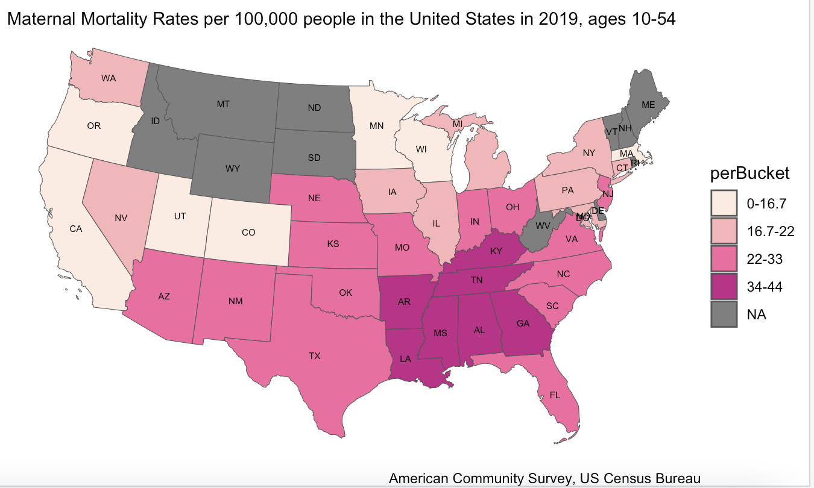

Ava Glazier
Maternal mortality is a significant burden in the United States. Some populations are at a higher risk than others. These populations include low income, racial minorities, insurance status, etc.

this data visualization is going to explore the burden. we are going to look at a lot of graphs. it will tell an interesting story.
Here’s a link.